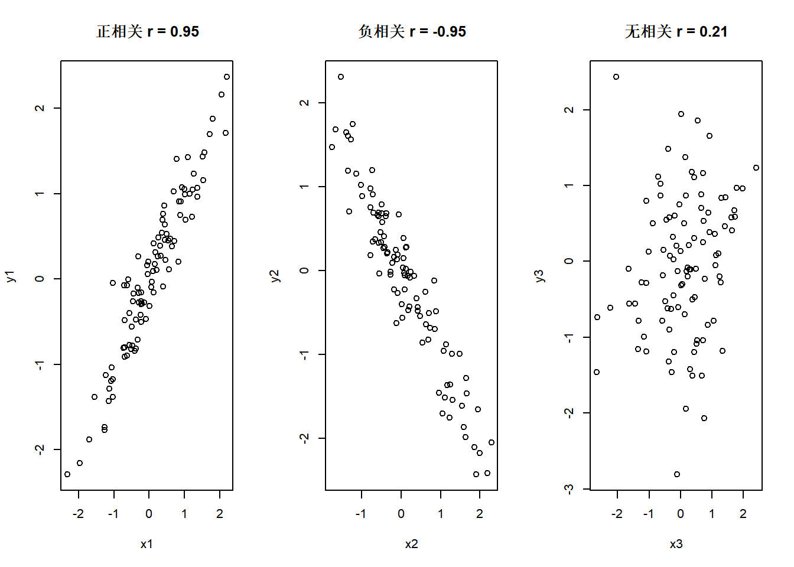
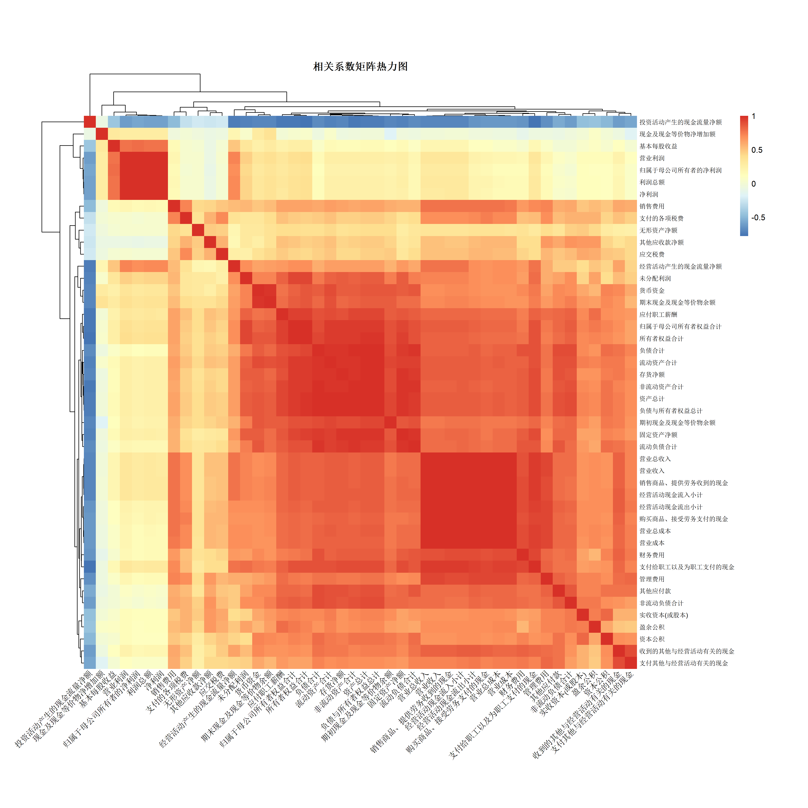
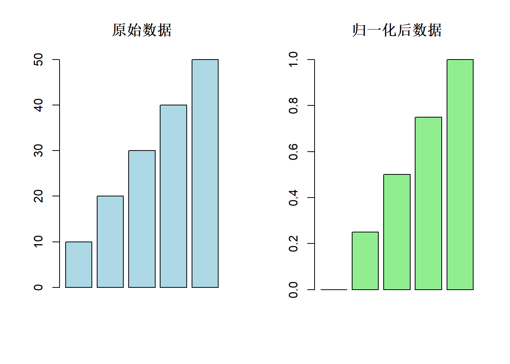

install.packages(c("dplyr", "pheatmap"))R语言财务数据分析入门教程
1 环境准备与包管理
在R语言中，包（Package）是功能的集合，类似于工具箱。我们需要先安装，然后加载它们。
安装必要的包：
加载包：
library(dplyr)
library(pheatmap)dplyr 是 tidyverse 生态系统中的核心包，提供了一套简洁的数据操作语法：
filter()：筛选行select()：选择列mutate()：创建新列或修改现有列group_by()：分组操作%>%：管道操作符，让代码更易读
示例：
# 创建示例数据
example_data <- data.frame(
姓名 = c("张三", "李四", "王五"),
年龄 = c(25, 30, 28),
工资 = c(5000, 8000, 6000)
)
# 使用管道操作符进行数据处理
result <- example_data %>%
filter(年龄 > 25) %>% # 筛选年龄大于25的
mutate(工资级别 = ifelse(工资 > 6000, "高", "中")) # 添加新列
print(result) 姓名 年龄 工资 工资级别
1 李四 30 8000 高
2 王五 28 6000 中pheatmap 用于创建美观的热力图，常用于展示相关系数矩阵或基因表达数据。
2 读取数据
CSV 是一种常见的表格数据格式，可以用 Excel 打开。Excel 表格也可以另存为 CSV 格式（UTF-8）供脚本使用。这里的 CSV 文件中已经将无用的说明行删除。
# 读取三张财务报表
fs_combas <- read.csv("FS_Combas.csv") # 资产负债表
fs_comins <- read.csv("FS_Comins.csv") # 利润表
fs_comscfd <- read.csv("FS_Comscfd.csv") # 现金流量表
# 简要查看字段
list(
combas_cols = names(fs_combas)[1:10],
comins_cols = names(fs_comins)[1:10],
comscfd_cols = names(fs_comscfd)[1:10]
)$combas_cols
[1] "Stkcd" "ShortName" "Accper" "Typrep" "IfCorrect"
[6] "DeclareDate" "A001101000" "A0d1101101" "A0d1102000" "A0d1102101"
$comins_cols
[1] "Stkcd" "ShortName" "Accper" "Typrep" "IfCorrect"
[6] "DeclareDate" "B001100000" "B001101000" "Bbd1102000" "Bbd1102101"
$comscfd_cols
[1] "Stkcd" "ShortName" "Accper" "Typrep" "IfCorrect"
[6] "DeclareDate" "C001001000" "C0b1002000" "C0F1023000" "C0b1003000" 3 数据过滤
我们希望仅保留季度末的合并报表数据，处理步骤如下：
- 将 Accper 转为 Date，使用
as.Date(…, format = "%Y-%m-%d") - 用
format(Accper, "%m-%d")提取月份-日期，再与季度末集合匹配 Typrep == "A"选定合并报表的记录
当同样的操作需要重复多次时，自定义函数可以避免代码重复，提高效率。
filter_data <- function(df) {
# 步骤1：将Accper列转换为日期格式
df$Accper <- as.Date(df$Accper, format = "%Y-%m-%d")
# 筛选季度末日期和A类报表
df[format(df$Accper, "%m-%d") %in% c("03-31", "06-30", "09-30", "12-31") &
df$Typrep == "A", ]
}
fs_combas <- filter_data(fs_combas)
fs_comins <- filter_data(fs_comins)
fs_comscfd <- filter_data(fs_comscfd)
# 查看筛选后规模
c(
combas_n = nrow(fs_combas),
comins_n = nrow(fs_comins),
comscfd_n = nrow(fs_comscfd)
) combas_n comins_n comscfd_n
987 987 987 3.1 函数解析
as.Date()函数
- 作用：将字符串转换为R的日期对象
- 常用格式符号：
%Y：4位年份%m：月份（01-12）%d：日期（01-31）
示例：
# 不同格式的日期转换示例
date1 <- as.Date("2024-10-14", format = "%Y-%m-%d")
date2 <- as.Date("14/10/2024", format = "%d/%m/%Y")
date3 <- as.Date("Oct 14, 2024", format = "%b %d, %Y")
# 转换结果
print(date1)[1] "2024-10-14"print(date2)[1] "2024-10-14"print(date3)[1] NA若日期格式不为 “YYYY-MM-DD”，需调整 format，可先打印前几行 Accper 核验。此外，%in% 可以检查元素是否在向量中，& 为逻辑“与”操作符，需要两个条件同时满足。
4 数据清洗与合并
三张报表通常存在重复公共列（如 Stkcd、Accper、ShortName、Typrep、IfCorrect、DeclareDate）。在进行横向合并前，应避免重复列名冲突，因此我们在利润表、现金流量表剔除部分公共列，仅保留合并键（Stkcd、Accper）。
代码要点：
setdiff：集合差运算，返回在第一个集合但不在第二个集合中的元素any_of：选择器，选择存在的列，忽略不存在的列full_join：全连接，保留两个数据框的所有行，可用 by 参数指定连接键
# 获取公共列名
common_cols_names <- Reduce(
intersect, list(names(fs_combas), names(fs_comins), names(fs_comscfd))
)
# 去掉重复的公共列
fs_comins_clean <- fs_comins %>% select(
-any_of(setdiff(common_cols_names, c("Stkcd", "Accper")))
)
fs_comscfd_clean <- fs_comscfd %>% select(
-any_of(setdiff(common_cols_names, c("Stkcd", "Accper")))
)
# 合并数据框
fs_all <- fs_combas %>%
full_join(fs_comins_clean, by = c("Stkcd", "Accper")) %>%
full_join(fs_comscfd_clean, by = c("Stkcd", "Accper"))
dim(fs_all) # 行列数[1] 987 2954.1 连接类型说明
R中的 dplyr 包提供了多种连接方式：
# 创建示例数据
df1 <- data.frame(ID = c(1, 2, 3), Name = c("张三", "李四", "王五"))
df2 <- data.frame(ID = c(2, 3, 4), Score = c(85, 90, 95))
print(df1) ID Name
1 1 张三
2 2 李四
3 3 王五print(df2) ID Score
1 2 85
2 3 90
3 4 95# 内连接：只保留两边都有的
print(inner_join(df1, df2, by = "ID")) ID Name Score
1 2 李四 85
2 3 王五 90# 左连接：保留左边所有的
print(left_join(df1, df2, by = "ID")) ID Name Score
1 1 张三 NA
2 2 李四 85
3 3 王五 90# 全连接：保留两边所有的
print(full_join(df1, df2, by = "ID")) ID Name Score
1 1 张三 NA
2 2 李四 85
3 3 王五 90
4 4 <NA> 955 缺失值处理
移除包含缺失值的列，这很保守，会丢弃大量信息，但能保证相关性计算不会因 NA 报错。
# 统计每列缺失值的个数
na_counts <- colSums(is.na(fs_all))
summary(na_counts) Min. 1st Qu. Median Mean 3rd Qu. Max.
0.0 77.0 947.0 620.1 987.0 987.0 # 统计每列的缺失比例
na_ratio <- colMeans(is.na(fs_all))
summary(na_ratio) Min. 1st Qu. Median Mean 3rd Qu. Max.
0.00000 0.07801 0.95947 0.62822 1.00000 1.00000 # 保留缺失比例 <= 5% 的列
fs_all <- fs_all[, na_ratio <= 0.05]
dim(fs_all)[1] 987 71# 仅保留完全无缺失值的列
fs_all <- fs_all[, colSums(is.na(fs_all)) == 0]
dim(fs_all)[1] 987 52提示：
- 如果许多列都有缺失，这一步会删除大量变量，导致相关矩阵很小。
- 替代方案：在计算相关系数时使用
use = "pairwise.complete.obs"，允许不同变量对用自己的完整对观测来计算，从而保留更多变量。
6 相关性分析
fs_all 中的前 6 列为标识列，从第 7 列起都是数值列。
# 提取第7列之后的所有数值列
data_cols <- fs_all[, 7:ncol(fs_all)]
data_cols_names <- names(fs_all)[7:ncol(fs_all)]
str(list(n_numeric = ncol(data_cols), first3 = head(data_cols_names, 3)))List of 2
$ n_numeric: int 46
$ first3 : chr [1:3] "A001101000" "A001121000" "A001123000"6.1 相关系数矩阵
我们使用 cor 计算变量之间的相关系数矩阵。默认 method = "pearson"。
回顾：
- 皮尔逊相关系数 \(r(X, Y) = Cov(X, Y) / (sd(X) * sd(Y))\)，取值范围 [-1, 1]。
- r 越接近 1，表示线性正相关
- 越接近 -1，表示线性负相关
- 接近 0 表示近似无线性相关
示例：
# 创建示例数据展示不同的相关性
set.seed(123)
n <- 100
# 正相关
x1 <- rnorm(n)
y1 <- x1 + rnorm(n, 0, 0.3)
# 负相关
x2 <- rnorm(n)
y2 <- -x2 + rnorm(n, 0, 0.3)
# 无相关
x3 <- rnorm(n)
y3 <- rnorm(n)
# 创建图形
par(mfrow = c(1, 3))
plot(x1, y1, main = paste("正相关 r =", round(cor(x1, y1), 2)))
plot(x2, y2, main = paste("负相关 r =", round(cor(x2, y2), 2)))
plot(x3, y3, main = paste("无相关 r =", round(cor(x3, y3), 2)))
对我们的数据：
# 计算相关系数矩阵
# cor()函数：计算皮尔逊相关系数
cor_matrix <- cor(data_cols)
# 查看相关系数矩阵的维度
cat("相关系数矩阵维度：", dim(cor_matrix)[1], "×", dim(cor_matrix)[2], "\n")相关系数矩阵维度： 46 × 46 # 查看相关系数取值范围
cat("相关系数范围：", range(cor_matrix, na.rm = TRUE), "\n")相关系数范围： -0.7796332 1 # 显示部分相关系数矩阵（前6行前6列）
print(round(cor_matrix[1:6, 1:6], 3)) A001101000 A001121000 A001123000 A001100000 A001212000 A001218000
A001101000 1.000 0.263 0.846 0.898 0.842 0.314
A001121000 0.263 1.000 0.436 0.508 0.315 0.477
A001123000 0.846 0.436 1.000 0.979 0.967 0.360
A001100000 0.898 0.508 0.979 1.000 0.932 0.429
A001212000 0.842 0.315 0.967 0.932 1.000 0.283
A001218000 0.314 0.477 0.360 0.429 0.283 1.0007 列名映射
将相关系数矩阵的行列名从科目编码替换为为中文名称。
# 列名映射
colname_map <- c(
"A001101000" = "货币资金",
"A0d1101101" = "其中:客户资金存款",
"A0d1102000" = "结算备付金",
"A0d1102101" = "其中：客户备付金",
"A0b1103000" = "现金及存放中央银行款项",
"A0b1104000" = "存放同业款项",
"A0b1105000" = "贵金属",
"A0f1106000" = "拆出资金净额",
"A001107000" = "交易性金融资产",
"A0f1108000" = "衍生金融资产",
"A001109000" = "短期投资净额",
"A001110000" = "应收票据净额",
"A001111000" = "应收账款净额",
"A001127000" = "应收款项融资",
"A001112000" = "预付款项净额",
"A0i1113000" = "应收保费净额",
"A0i1114000" = "应收分保账款净额",
"A0i1115000" = "应收代位追偿款净额",
"A0i1116000" = "应收分保合同准备金净额",
"A0i1116101" = "其中:应收分保未到期责任准备金净额",
"A0i1116201" = "其中:应收分保未决赔款准备金净额",
"A0i1116301" = "其中:应收分保寿险责任准备金净额",
"A0i1116401" = "其中:应收分保长期健康险责任准备金净额",
"A001119000" = "应收利息净额",
"A001120000" = "应收股利净额",
"A001121000" = "其他应收款净额",
"A0f1122000" = "买入返售金融资产净额",
"A001123000" = "存货净额",
"A001123101" = "其中：数据资源（存货）",
"A001128000" = "合同资产",
"A001129000" = "持有待售资产",
"A001124000" = "一年内到期的非流动资产",
"A0d1126000" = "存出保证金",
"A001125000" = "其他流动资产",
"A001100000" = "流动资产合计",
"A0i1224000" = "保户质押贷款净额",
"A0i1225000" = "定期存款",
"A0b1201000" = "发放贷款及垫款净额",
"A001226000" = "债权投资",
"A0F1132000" = "以摊余成本计量的金融资产",
"A001202000" = "可供出售金融资产净额",
"A001227000" = "其他债权投资",
"A0F1232000" = "以公允价值计量且其变动计入其他综合收益的债务工具投资",
"A001203000" = "持有至到期投资净额",
"A001204000" = "长期应收款净额",
"A001205000" = "长期股权投资净额",
"A001228000" = "其他权益工具投资",
"A0F1233000" = "以公允价值计量且其变动计入其他综合收益的权益工具投资",
"A0F1133000" = "以公允价值计量且其变动计入其他综合收益的金融资产",
"A001229000" = "其他非流动金融资产",
"A001206000" = "长期债权投资净额",
"A001207000" = "长期投资净额",
"A0i1209000" = "存出资本保证金",
"A0i1210000" = "独立账户资产",
"A001211000" = "投资性房地产净额",
"A001212000" = "固定资产净额",
"A001213000" = "在建工程净额",
"A001214000" = "工程物资",
"A001215000" = "固定资产清理",
"A001216000" = "生产性生物资产净额",
"A001217000" = "油气资产净额",
"A001230000" = "使用权资产",
"A001218000" = "无形资产净额",
"A0d1218101" = "其中:交易席位费",
"A001218201" = "其中：数据资源（无形资产）",
"A001219000" = "开发支出",
"A001219101" = "其中：数据资源（开发支出）",
"A001220000" = "商誉净额",
"A001221000" = "长期待摊费用",
"A001222000" = "递延所得税资产",
"A0F1224000" = "代理业务资产",
"A001223000" = "其他非流动资产",
"A001200000" = "非流动资产合计",
"A0f1300000" = "其他资产",
"A001000000" = "资产总计",
"A002101000" = "短期借款",
"A0d2101101" = "其中:质押借款",
"A0D2130000" = "应付短期融资款",
"A0b2102000" = "向中央银行借款",
"A0b2103000" = "吸收存款及同业存放",
"A0b2103101" = "其中：同业及其他金融机构存放款项",
"A0b2103201" = "其中：吸收存款",
"A0f2104000" = "拆入资金",
"A002105000" = "交易性金融负债",
"A0f2106000" = "衍生金融负债",
"A002107000" = "应付票据",
"A002108000" = "应付账款",
"A002109000" = "预收款项",
"A002128000" = "合同负债",
"A0f2110000" = "卖出回购金融资产款",
"A0i2111000" = "应付手续费及佣金",
"A002112000" = "应付职工薪酬",
"A002113000" = "应交税费",
"A002114000" = "应付利息",
"A002115000" = "应付股利",
"A0i2116000" = "应付赔付款",
"A0i2117000" = "应付保单红利",
"A0i2118000" = "保户储金及投资款",
"A0i2119000" = "保险合同准备金",
"A0i2119101" = "其中:未到期责任准备金",
"A0i2119201" = "其中:未决赔款准备金",
"A0i2119301" = "其中:寿险责任准备金",
"A0i2119401" = "其中:长期健康险责任准备金",
"A002120000" = "其他应付款",
"A0i2121000" = "应付分保账款",
"A0d2122000" = "代理买卖证券款",
"A0d2123000" = "代理承销证券款",
"A0i2124000" = "预收保费",
"A002129000" = "持有待售负债",
"A002125000" = "一年内到期的非流动负债",
"A002126000" = "其他流动负债",
"A002127000" = "递延收益-流动负债",
"A002100000" = "流动负债合计",
"A002201000" = "长期借款",
"A0d2202000" = "独立账户负债",
"A002203000" = "应付债券",
"A002211000" = "租赁负债",
"A002204000" = "长期应付款",
"A002212000" = "长期应付职工薪酬",
"A002205000" = "专项应付款",
"A002206000" = "长期负债合计",
"A002207000" = "预计负债",
"A0F2210000" = "代理业务负债",
"A002208000" = "递延所得税负债",
"A002209000" = "其他非流动负债",
"A002210000" = "递延收益-非流动负债",
"A002200000" = "非流动负债合计",
"A0f2300000" = "其他负债",
"A002000000" = "负债合计",
"A003101000" = "实收资本(或股本)",
"A003112000" = "其他权益工具",
"A003112101" = "其中：优先股",
"A003112201" = "其中：永续债",
"A003112301" = "其中：其他",
"A003102000" = "资本公积",
"A003102101" = "减：库存股",
"A003103000" = "盈余公积",
"A0f3104000" = "一般风险准备",
"A003105000" = "未分配利润",
"A003106000" = "外币报表折算差额",
"A003107000" = "加：未确认的投资损失",
"A0F3108000" = "交易风险准备",
"A0F3109000" = "专项储备",
"A003111000" = "其他综合收益",
"A003100000" = "归属于母公司所有者权益合计",
"A003200000" = "少数股东权益",
"A003000000" = "所有者权益合计",
"A004000000" = "负债与所有者权益总计",
"B001100000" = "营业总收入",
"B001101000" = "营业收入",
"Bbd1102000" = "利息净收入",
"Bbd1102101" = "利息收入",
"Bbd1102203" = "利息支出",
"B0i1103000" = "已赚保费",
"B0i1103101" = "保险业务收入",
"B0i1103111" = "其中：分保费收入",
"B0i1103203" = "减：分出保费",
"B0i1103303" = "减：提取未到期责任准备金",
"B0d1104000" = "手续费及佣金净收入",
"B0d1104101" = "其中：代理买卖证券业务净收入",
"B0d1104201" = "其中:证券承销业务净收入",
"B0d1104301" = "其中：受托客户资产管理业务净收入",
"B0d1104401" = "手续费及佣金收入",
"B0d1104501" = "手续费及佣金支出",
"B0f1105000" = "其他业务收入",
"B001200000" = "营业总成本",
"B001201000" = "营业成本",
"B0i1202000" = "退保金",
"B0i1203000" = "赔付支出净额",
"B0i1203101" = "赔付支出",
"B0i1203203" = "减：摊回赔付支出",
"B0i1204000" = "提取保险责任准备金净额",
"B0i1204101" = "提取保险责任准备金",
"B0i1204203" = "减：摊回保险责任准备金",
"B0i1205000" = "保单红利支出",
"B0i1206000" = "分保费用",
"B001207000" = "税金及附加",
"B0f1208000" = "业务及管理费",
"B0i1208103" = "减：摊回分保费用",
"B0I1214000" = "保险业务手续费及佣金支出",
"B001209000" = "销售费用",
"B001210000" = "管理费用",
"B001216000" = "研发费用",
"B001211000" = "财务费用",
"B001211101" = "其中：利息费用(财务费用)",
"B001211203" = "其中：利息收入(财务费用)",
"B001305000" = "其他收益",
"B001302000" = "投资收益",
"B001302101" = "其中：对联营企业和合营企业的投资收益",
"B001302201" = "其中：以摊余成本计量的金融资产终止确认收益",
"B001303000" = "汇兑收益",
"B001306000" = "净敞口套期收益",
"B001301000" = "公允价值变动收益",
"B001212000" = "资产减值损失",
"B001307000" = "信用减值损失",
"B001308000" = "资产处置收益",
"B0f1213000" = "其他业务成本",
"B001304000" = "其他业务利润",
"B001300000" = "营业利润",
"B001400000" = "加：营业外收入",
"B001400101" = "其中：非流动资产处置利得",
"B001500000" = "减：营业外支出",
"B001500101" = "其中：非流动资产处置净损益",
"B001500201" = "其中：非流动资产处置损失",
"B001000000" = "利润总额",
"B002100000" = "减：所得税费用",
"B002200000" = "未确认的投资损失",
"B002300000" = "影响净利润的其他项目",
"B002000000" = "净利润",
"B002000401" = "持续经营净利润",
"B002000501" = "终止经营净利润",
"B002000101" = "归属于母公司所有者的净利润",
"B002000301" = "归属于母公司其他权益工具持有者的净利润",
"B002000201" = "少数股东损益",
"B003000000" = "基本每股收益",
"B004000000" = "稀释每股收益",
"B005000000" = "其他综合收益(损失)",
"B005000101" = "归属母公司所有者的其他综合收益的税后净额",
"B005000102" = "归属于少数股东的其他综合收益的税后净额",
"B006000000" = "综合收益总额",
"B006000101" = "归属于母公司所有者的综合收益",
"B006000103" = "归属于母公司其他权益工具持有者的综合收益总额",
"B006000102" = "归属少数股东的综合收益",
"C001001000" = "销售商品、提供劳务收到的现金",
"C0b1002000" = "客户存款和同业存放款项净增加额",
"C0F1023000" = "存放央行和同业款项净减少额",
"C0b1003000" = "向中央银行借款净增加额",
"C0b1004000" = "向其他金融机构拆入资金净增加额",
"C0i1005000" = "收到原保险合同保费取得的现金",
"C0i1006000" = "收到再保险业务现金净额",
"C0i1007000" = "保户储金及投资款净增加额",
"C0d1008000" = "处置交易性金融资产净增加额",
"C0f1009000" = "收取利息、手续费及佣金的现金",
"C0d1010000" = "拆入资金净增加额",
"C0d1011000" = "回购业务资金净增加额",
"C0F1024000" = "拆出资金净减少额",
"C0F1025000" = "买入返售款项净减少额",
"C001012000" = "收到的税费返还",
"C001013000" = "收到的其他与经营活动有关的现金",
"C001100000" = "经营活动现金流入小计",
"C001014000" = "购买商品、接受劳务支付的现金",
"C0b1015000" = "客户贷款及垫款净增加额",
"C0F1026000" = "向中央银行借款净减少额",
"C0b1016000" = "存放中央银行和同业款项净增加额",
"C0i1017000" = "支付原保险合同赔付款项的现金",
"C0f1018000" = "支付利息、手续费及佣金的现金",
"C0F1027000" = "支付再保业务现金净额",
"C0F1028000" = "保户储金及投资款净减少额",
"C0F1029000" = "拆出资金净增加额",
"C0F1030000" = "买入返售款项净增加额",
"C0F1031000" = "拆入资金净减少额",
"C0F1032000" = "卖出回购款项净减少额",
"C0i1019000" = "支付保单红利的现金",
"C001020000" = "支付给职工以及为职工支付的现金",
"C001021000" = "支付的各项税费",
"C001022000" = "支付其他与经营活动有关的现金",
"C001200000" = "经营活动现金流出小计",
"C001000000" = "经营活动产生的现金流量净额",
"C002001000" = "收回投资收到的现金",
"C002002000" = "取得投资收益收到的现金",
"C002003000" = "处置固定资产、无形资产和其他长期资产收回的现金净额",
"C002004000" = "处置子公司及其他营业单位收到的现金净额",
"C002005000" = "收到的其他与投资活动有关的现金",
"C002100000" = "投资活动产生的现金流入小计",
"C002006000" = "购建固定资产、无形资产和其他长期资产支付的现金",
"C002007000" = "投资支付的现金",
"C0i2008000" = "质押贷款净增加额",
"C002009000" = "取得子公司及其他营业单位支付的现金净额",
"C002010000" = "支付其他与投资活动有关的现金",
"C002200000" = "投资活动产生的现金流出小计",
"C002000000" = "投资活动产生的现金流量净额",
"C003008000" = "吸收投资收到的现金",
"C003001000" = "吸收权益性投资收到的现金",
"C003001101" = "其中：子公司吸收少数股东投资收到的现金",
"C003003000" = "发行债券收到的现金",
"C003002000" = "取得借款收到的现金",
"C003004000" = "收到其他与筹资活动有关的现金",
"C003100000" = "筹资活动现金流入小计",
"C003005000" = "偿还债务支付的现金",
"C003006000" = "分配股利、利润或偿付利息支付的现金",
"C003006101" = "其中：子公司支付给少数股东的股利、利润",
"C003007000" = "支付其他与筹资活动有关的现金",
"C003200000" = "筹资活动现金流出小计",
"C003000000" = "筹资活动产生的现金流量净额",
"C004000000" = "汇率变动对现金及现金等价物的影响",
"C007000000" = "其他对现金的影响",
"C005000000" = "现金及现金等价物净增加额",
"C005001000" = "期初现金及现金等价物余额",
"C006000000" = "期末现金及现金等价物余额"
)
# 替换行列名
rownames(cor_matrix) <- colname_map[rownames(cor_matrix)]
colnames(cor_matrix) <- colname_map[colnames(cor_matrix)]8 热力图可视化
pheatmap 将矩阵渲染为颜色网格，并可对行/列聚类。对相关矩阵进行聚类时，通常基于 1 - r 的“距离”来归并相似变量。默认 pheatmap 会对矩阵进行聚类（cluster_rows/cols = TRUE），但注意：
- 输入已是相似度（相关性）矩阵时，直接用欧式距离聚类未必直观；你也可以设置
clustering_distance_rows/cols = "correlation"对原始数据矩阵使用相关距离。既然我们已经是相关矩阵，做进一步聚类更多是将相似相关结构归类，可根据需要保留或关闭。 - 若变量数量很多，建议增大图尺寸或限制变量集合。
pheatmap() 函数的常用参数：
- main：图形标题
- fontsize_row/col：行列标签字体大小
- angle_col：列标签旋转角度（避免重叠）
- border_color：单元格边框颜色
- cluster_rows/cols：是否对行列进行聚类
- show_rownames/colnames：是否显示行列名
- color：颜色方案
保存高分辨率 PNG 文件：
png("cor_heatmap.png", width = 4200, height = 4200, res = 300)
pheatmap(
cor_matrix,
main = "相关系数矩阵热力图",
fontsize_row = 8,
fontsize_col = 8,
angle_col = 45,
border_color = NA,
cellwidth = 15,
cellheight = 15
)
dev.off()
可选参数建议
cluster_rows = FALSE, cluster_cols = FALSE：禁用聚类，仅按原始顺序展示。display_numbers = TRUE：在格子中显示数值（对变量较少时）。color = colorRampPalette(c("navy", "white", "firebrick3"))(50)：自定义配色。
9 数据归一化
归一化（Normalization）是将数据缩放到特定范围（通常是 \([0,1]\)）的过程。这在机器学习和数据分析中很重要，因为：
- 消除量纲影响
- 使不同指标可比
- 加快算法收敛速度
9.1 Min-Max 归一化
最常用的归一化方法是 Min-Max 归一化：
\[X_{normalized} = \frac{X - X_{min}}{X_{max} - X_{min}}\]
示例：
# 创建示例数据
example_values <- c(10, 20, 30, 40, 50)
cat("原始数据：", example_values, "\n")原始数据： 10 20 30 40 50 # Min-Max归一化
min_val <- min(example_values)
max_val <- max(example_values)
normalized <- (example_values - min_val) / (max_val - min_val)
cat("归一化后：", normalized, "\n")归一化后： 0 0.25 0.5 0.75 1 # 可视化
par(mfrow = c(1, 2))
barplot(example_values, main = "原始数据", col = "lightblue")
barplot(normalized, main = "归一化后数据", col = "lightgreen", ylim = c(0, 1))
接下来对每个会计期 Accper 进行组内归一化：
- 对每个数值列 X，计算 (X - min(X)) / (max(X) - min(X))，使得该期内该变量落在 [0,1]。
- 作用：消除不同期之间的量纲差异，便于横向对比。
# 使用dplyr进行分组归一化
fs_all_scaled <- fs_all %>%
group_by(Accper) %>% # 按时期分组
mutate(across( # across()：对多列应用相同的操作
all_of(data_cols_names), # all_of()：选择指定的列
~ (. - min(.)) / (max(.) - min(.)) # 归一化公式
)) %>%
ungroup() # 取消分组
# 查看归一化前后的对比
original_sample <- fs_all[1:3, c("Stkcd", "Accper", data_cols_names[1])]
scaled_sample <- fs_all_scaled[1:3, c("Stkcd", "Accper", data_cols_names[1])]
# 归一化前的数据
print(original_sample) Stkcd Accper A001101000
1 592 2020-03-31 292929506
2 592 2020-06-30 647060095
3 592 2020-09-30 572977249# 归一化后的数据
print(scaled_sample)# A tibble: 3 × 3
Stkcd Accper A001101000
<int> <date> <dbl>
1 592 2020-03-31 0.0137
2 592 2020-06-30 0.0265
3 592 2020-09-30 0.0244